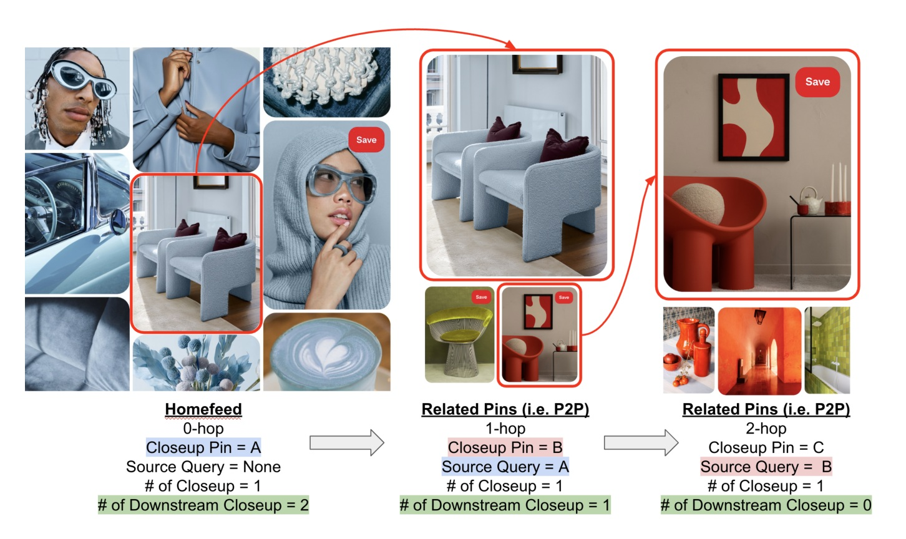
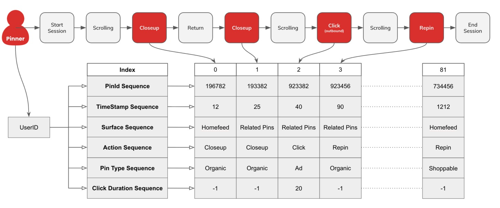
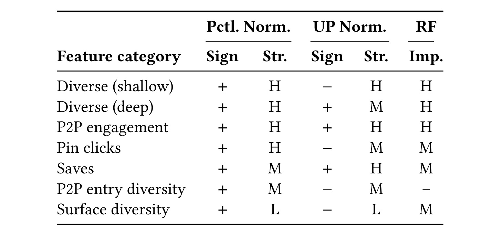
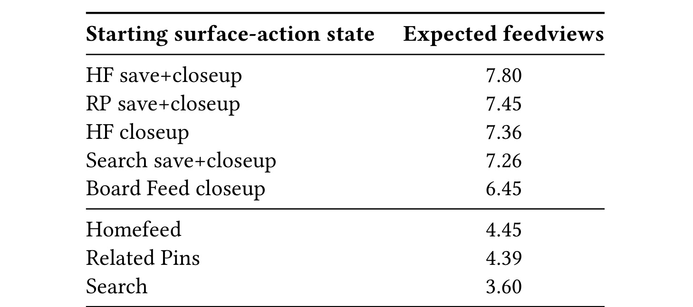
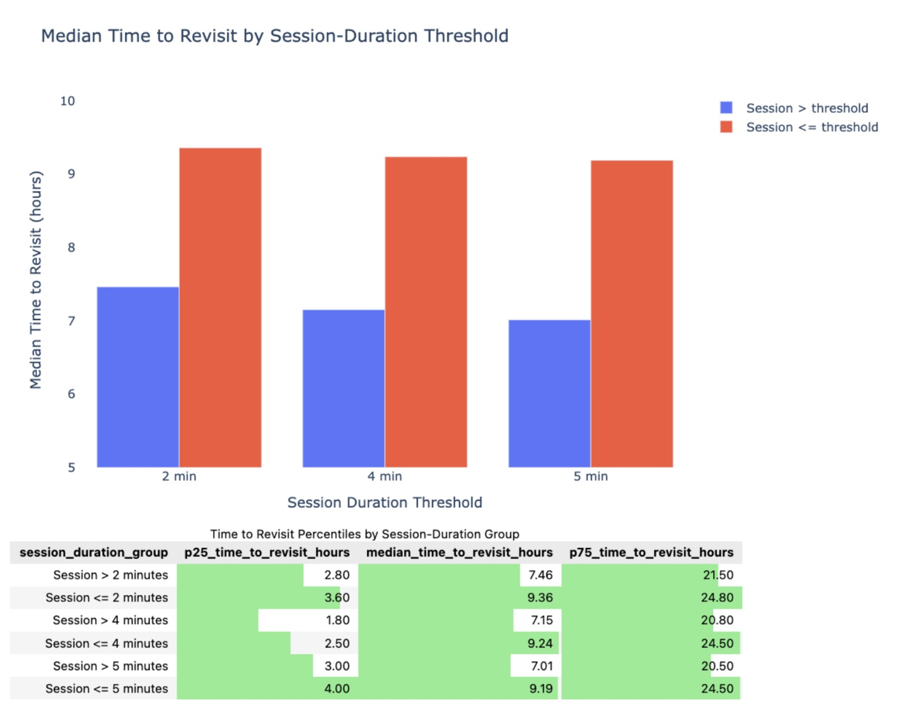
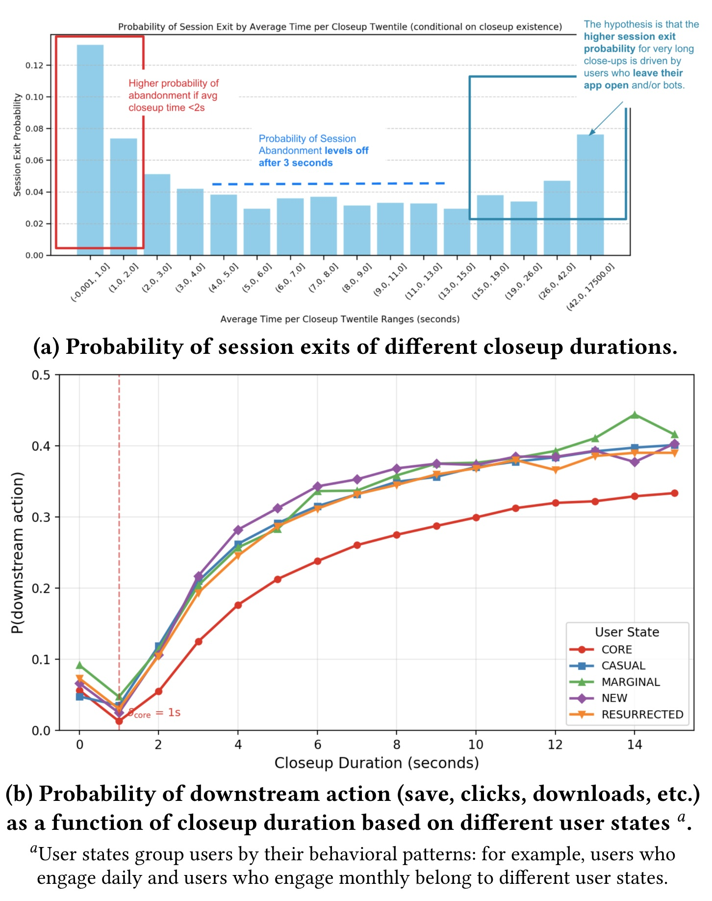
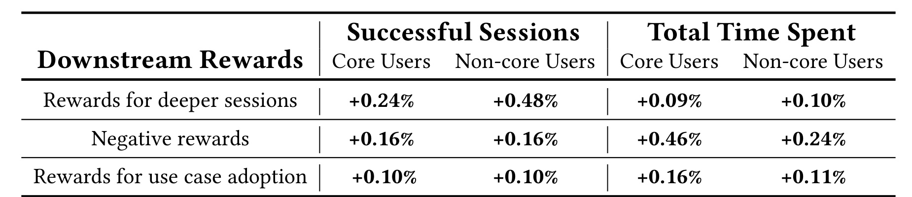
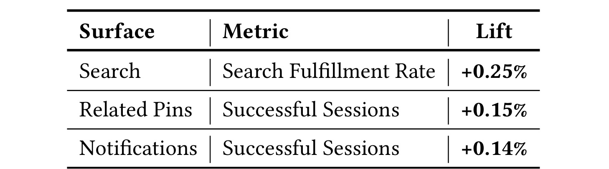

Long-term User Engagement Optimization through Model-agnostic Downstream Rewards Learning
中文题名：模型无关下游奖励：把长期留存目标接入大规模推荐排序
- 论文入口： arXiv:2607.14192
- 作者： Dingsu Wang、Filip Ryzner、Kelly He、Armando Ordorica、David Woo、Aditya Mantha、Liyao Lu、Usha Amrutha Nookala、Haoran Guo、Jiacong He、Olafur Gudmundsson、Matt Chun、Krystal Benitez、Dhruvil Deven Badani、Yijie Dylan Wang
- 机构与来源： Pinterest；RecSys 2026；2026-07-15 提交
- 代码与数据： 未核验到公开代码。实验依赖 Pinterest 私有跨业务面行为日志，论文没有公共数据集复现。
1. 背景和问题
长期留存标签稀疏、延迟，而且只能部分归因到更早的一次推荐；序列强化学习虽然能显式写出长周期目标，却往往把困难转移为业务面专属的奖励工程、额外计算和难以复用的部署链路。
成熟推荐系统很容易把“下一次点击、保存或停留”变成密集监督，但这不等于长期用户价值。只优化即时交互可能强化内容同质化和反馈回路，也可能让系统用浅层高频浏览换取短期数字，却削弱用户之后是否回来。论文把 Pinterest 的困难拆成三层：其一，return/retention 事件相对稀少且带噪；其二，即使若干天后观察到用户活跃，也很难把它干净地分配给某个此前曝光；其三，用户兴趣、供给和流量结构会变化，固定代理目标可能逐渐失去对齐。因此作者不直接训练一个“留存预测头”就结束，而是先问：哪些在 session 内或紧随 session 出现的动作，既足够早、足够多，又真的预示未来持续活跃？
论文选择 Pin-to-Pin（P2P）rabbit hole 作为主要归因场景。用户先在 Homefeed 或 Search 对一个 source Pin 执行 closeup，随后进入 Related Pins 连续探索；同一条用户旅程还可能跨越 Search、Notifications 等不同 ranker。对 Homefeed/Search，系统排序的是 entry candidate，代理学习更接近“候选是否触发有价值的后续轨迹”；对 Related Pins，排序本身发生在 P2P 内部，代理更接近“后续动作序列质量”。这一区分很重要：所谓 model-agnostic 不是所有业务面共享一个完全相同的模型，而是共享一组从观察轨迹导出的奖励定义，让不同排序架构以多头、样本权重或效用组合的方式接入。

Figure 1 把归因单元画成 0-hop、1-hop、2-hop 三段。0-hop 的 Homefeed Pin A 是 source candidate，用户 closeup 后进入 Related Pins；1-hop 的 Pin B 以 A 为 source query，继续 closeup 后再产生 Pin C。图中 “downstream closeup” 计数随 hop 推进而减少，说明奖励不是只看 entry Pin 自身是否被点，而是回看它启动了怎样的后续旅程。红色箭头和 Save 动作还揭示一个关键事实：不同 hop 的动作可能发生在不同内容与 surface 上，若只优化当前 ranker 的下一次响应，就会漏掉跨 surface 价值。反过来，后续行为也不是天然因果归因给 A；论文只能把这条轨迹当作代理监督，再用离线筛选和线上随机实验逐步提高可信度。
论文的核心贡献由此形成一条务实链路：先从约十亿级用户活动中筛选早期可观测的 retention proxy，再把深层 session 参与、浅层放弃和新 use case 采用构造成互补奖励，最后用共享事件序列基础设施把标签接入 Homefeed、Related Pins、Search、Notifications 的既有 ranker。它刻意回避了一个更强但昂贵的主张：本文没有证明这些代理等价于真实长期留存，也没有训练统一策略跨业务面做端到端 RL。它证明的是，经过筛选的近端行为可以成为可部署的辅助监督，并在多个线上 A/B 中同时带来 engagement 与 retention-related 指标的改善。
这也决定了阅读本文的正确顺序：先审计代理为何入选，再看奖励如何进入模型，最后才读线上 lift。若跳过第一步，任何密集动作都可能被误写成长期价值；若跳过最后一步，离线相关性又会被误当作实际产品效应。论文最成熟之处正是把 discovery、label derivation 与 production experiment 分开，而不是用一个漂亮的留存相关系数串起全部结论。
2. 方法
2.1 从真实留存目标到可训练代理
作者先写出理想目标。令 \(H_{u,t}\) 为用户 \(u\) 在时刻 \(t\) 前的历史，\(x_{u,t}\sim\pi_\theta(\cdot\mid H_{u,t})\) 是策略给出的候选 Pin，\(R_{u,t}\in\{0,1\}\) 表示在未来窗口 \(\Delta\) 内是否回访、活跃或发生目标动作，用户动态记为 \(P_u\)，则折扣长期目标为：
这里 \(\tau\) 是推荐与用户响应共同产生的交互轨迹，\(\gamma\in(0,1]\) 控制远期回报权重。这个目标表达正确，却难以直接监督：真实 \(R_{u,t}\) 延迟且归因模糊，生产系统也无法为每次 candidate 稳定观测完整反事实。
论文于是把 entry Pin 之后的 P2P 行动写成 \(S_{u,t}\)，并分解为“是否进入 rabbit hole”与“进入后发生什么”两步：
其中 \(E\) 表示是否 closeup entry Pin，\(p^{\mathrm{enter}}_\beta\) 估计进入 P2P 的概率，\(p_\phi\) 描述条件于进入后的下游轨迹，\(R(\widehat S)\) 把 save、download、screenshot、exit 等动作聚合成奖励；未进入时奖励为零。Homefeed/Search 主要通过 entry head 学习 candidate 启动价值，Related Pins 更直接学习轨迹质量。最终把真实回报替换为代理回报：
此处折扣符号 β 来自论文 Definition 2.3，与 entry model 参数下标同字母但语义不同。“模型无关”的核心不是去掉模型，而是把奖励固定为从可观察轨迹计算的标签，使不同 ranker 不必共享网络结构或使用同一种 RL 优化器。
符号解释：本节统一用 \(u,t,x,H\) 表示用户、时刻、候选和历史，\(\theta\) 是实际 ranker 参数，\(\beta,\phi\) 是代理 entry/trajectory 模型参数，\(\gamma\) 或 Definition 2.3 中的折扣 \(\beta\) 控制远期权重；带帽的 \(\widehat S,\widehat R,\widehat J\) 都表示预测轨迹或代理量，而不是已观察到的真实留存回报。
2.2 离线筛选：先证明确实值得做成奖励
作者没有从直觉直接挑 reward，而是要求候选同时过三道门槛：与未来 revisit/持续活跃相关；能在 session 内或不久后被观察；在控制相关动作与曝光后仍提供增量预测。每个样本是以 pivot day \(t=0\) 为中心的 user-day。若用户在前两周 \(D_u(-2)\le1,D_u(-1)\le1\)，就属于稳定低活跃；若随后两周都达到 \(D_u(+1)\ge3,D_u(+2)\ge3\)，则 \(Y_u=1\)。约 4% 的低活跃人群满足这一正标签。模型在数十万样本上训练 Random Forest，并用相关性、feature importance、SHAP 与 dependence analysis 排序候选，held-out AUC 为 0.65–0.70。这个 AUC 足够做筛选器，但远非精准留存预测器，作者也没有据此直接上线排序。
原始动作计数很容易只是曝光量的替身。论文把 174 个基础特征扩展为约 \(10^3\) 个交叉候选，并引入 user-prevalence（UP）normalization。对动作/曝光特征 \(j\)：
\(a_{u,0}^{(j)}\) 是 pivot day 动作量，\(I_{u,0}\) 是曝光，\(\widetilde r_u^{(j)}\) 是过去两周个人动作密度中位数；正负值表示当天高于或低于个人基线。论文还和用户历史 percentile normalization 对照。这个设计让“看了更多所以点得更多”与“同等曝光下确实更深地参与”分开，也解释了为何 shallow diversity、Pin click、P2P entry diversity 在控制曝光后会翻转方向。
筛选得到的证据链不是单个相关系数。日级模型显示 deep P2P、save、深层多样性较稳健；session-level Markov chain 再估计从 surface-action 状态到 session 结束前的 expected feedviews；最后比较不同 session-duration threshold 上下的 next revisit。三层都指向“深层动作—更长 session—更快 revisit”，但第三步仍是观察相关，不能把用户本来就更有意图这一混杂因素自动排除。论文把这种离线分析用于缩小线上候选，而不是宣称已识别因果 reward。
2.3 三类互补下游奖励
第一类是 deeper-session engagement。对 entry 后第 \(i\) 个事件，动作集合 \(\mathcal A^{\mathrm{eng}}\) 包含 save、download、screenshot 等深层信号，动作权重为 \(w_a\ge0\)，单步奖励 \(r^{\mathrm{eng}}_{u,t+i}=\sum_{a\in\mathcal A^{\mathrm{eng}}}w_a\mathbf 1[A_{u,t+i}=a]\)。整个 session 的奖励为：
\(n_{u,t}\) 是 session 结束前的事件数，折扣让更接近 source Pin 的动作获得更多 credit。它比单一 save label 更丰富，却也保留一个人为选择：动作集合、动作权重与折扣都决定系统究竟把哪种深度当作长期价值。
第二类是 negative reward，重点惩罚很快退出且没有后续高意图动作的 shallow closeup。令 \(d_{u,t+i}\) 为 closeup dwell time，\(I^{\mathrm{pos}}_{u,t+i}\) 表示之后是否发生 save、long click、深层 P2P 等正动作，分人群阈值为 \(\delta_{\mathrm{state}(u)}\)：
\(\lambda^{\mathrm{SC}}>0\) 控制惩罚强度。论文后来发现统一 1 秒阈值会伤害 non-core 用户，于是使用 core 1 秒、non-core 0.5 秒；Related Pins 的行为分布又不同，阈值提高到 2 秒。这正说明 reward label 虽可跨模型复用，阈值仍需按人群与 surface 校准。
第三类是 use-case adoption，目标不是只强化已有兴趣，而是奖励“用户真正参与了兴趣簇之外的新内容”。给定用户预计算兴趣簇 embedding \(\{c_{u,1},\ldots,c_{u,K}\}\) 与候选 embedding \(e_x\)：
\(\eta\) 是新颖性阈值，conjunction 避免只推“没见过但也不喜欢”的内容。训练时论文把满足 UCA 的 engaged 正样本权重加倍，并在 \(\{0.5,0.6,0.7\}\) 中选择 \(\eta=0.6\)。该奖励仍受兴趣簇质量约束：簇过粗会把熟悉内容误判为新用例，簇过细则会让几乎所有候选显得新颖。
2.4 DRv2 标签推导与线上多头平衡
早期 DRv1 为每条 impression/closeup 预聚合 \(n\)-hop reward，用 Spark 反复 self-join P2P 日志。任何 attribution window、hop discount 或 action filter 变化，都要重算奖励表并回填所有训练集，单个变体会占用数周。DRv2 改成一次生成用户日级 engagement sequence：PinId、timestamp、surface、action、Pin type、click duration 等属性按事件索引对齐。训练某个 surface 时，用 \((u,dt)\) 把 recommendation log 与 DRv2 序列 join，再在 Ray dataloader 内由 UDF 扫描后续事件、按当前配置即时派生标签。

Figure 4 展示 DRv2 真正复用的不是某个已经定死的 reward column，而是一条可重算的用户行为序列。上方从 Start Session、Scrolling、Closeup、Return 到 Click、Repin、End Session 的事件链，向下映射为统一 index；同一 index 上 PinId、timestamp、surface、action、Pin type、click duration 严格对齐。这样 Homefeed 训练样本可以查询此后 Related Pins 的动作，新的 UDF 也能改变 hop、时间窗或 action filter 而不重建底层日志。图中 index 0 到 81 还提醒我们序列可能很长，基础设施收益来自“序列只生产一次、标签按需计算”，并不意味着每次训练无需扫描或不会引入 join、CPU 与内存成本。
该改造把 idea-to-experiment 从约三周缩至约两天，即约 10 倍加速；因为 UDF 与 data I/O 重叠，论文报告增量训练 step cost 保持在 baseline 的 5% 以内。接入 ranker 时，下游奖励通常成为 multi-head 模型的辅助预测，serving score 为：
\(p_i(x)\) 是即时动作或 downstream-reward head 的预测，\(w_i\) 是 serving weight；negative head 使用负权重。不同于端到端学习所有效用权重，论文用 HyperOPT 在 ranker 外调参，以保持即时 engagement 中性并提高 retention-related 指标。训练阶段可以新增标签头或样本 reweight，推理阶段仍是既有候选的多头效用组合。好处是上线边界清晰、便于加约束；代价是权重搜索与分群阈值形成新的外部控制面，也必须防止某个 surface 的局部收益蚕食另一 surface。
3. 实验结果
3.1 离线筛选与代理证据链
离线筛选的 positive transition 只占稳定低活跃人群约 4%，因此作者不把原始相关性当作奖励依据。Random Forest 的 held-out AUC 0.65–0.70 说明 pivot-day 行为含有可用预测信息，但同时暴露明显上限：仍有大量未来活跃无法由这些早期动作解释。更关键的结果是归一化后方向变化，而不是追求单一 AUC。论文比较 percentile normalization 与相对个人曝光基线的 UP normalization，并用 RF importance 作为多变量补充。

Table 1 中，shallow diversity 在 percentile normalization 下是高强度正相关，换成 UP normalization 后变为高强度负相关；Pin click、P2P entry diversity、surface diversity 也从正向翻为负向。它们更像“看得多所以点得多”的浅层流量信号。相反，deep diversity 在两种口径下都为正且 RF importance 高，P2P engagement 在两种口径都是高强度正向且重要性高，save 也保持正向。表格因此支持作者挑选“怎样参与”而非“看了多少”的候选，但 Sign/Str. 只有方向与 H/M/L 等级，没有系数、置信区间或因果估计，不能把 H 解释为固定幅度的留存提升。
为验证日级结果不是纯粹由聚合方式造成，作者又用生产流量的 empirical transition matrix 建立 session-level Markov chain，以 surface-action pair 为状态、session end 为吸收态，估计从每个状态开始到终止前的 expected feedviews。这个量衡量 continuation，不直接等于满意度或留存；但它能检验 closeup/save 是否确实对应更深的后续探索。

Table 2 给出非常直观的层级：Homefeed save+closeup 为 7.80，Related Pins save+closeup 为 7.45，Homefeed closeup 为 7.36，Search save+closeup 为 7.26，Board Feed closeup 为 6.45；纯 surface entry 的 Homefeed、Related Pins、Search 只有 4.45、4.39、3.60。save 与 closeup 组合普遍高于仅进入某个 surface，符合“深层动作延长旅程”的假设。不过 expected feedviews 是基于历史转移概率的描述性期望，既可能包含推荐影响，也可能包含用户原有意图强弱；它适合排序奖励候选，不足以证明强行增加 feedviews 会导致留存。
第三步把 session continuation 与未来回访联系起来。论文在 2–38 分钟的九个阈值上比较长/短 session 的 next revisit，所有 t-test 都满足 \(p<10^{-43}\)；5 分钟阈值的 median gap 约 2.2 小时，20 分钟阈值约 2.7 小时。极小 \(p\) 值部分来自大样本，不能代替 effect size 与混杂控制。

Figure 2 的可见部分展示 2、4、5 分钟三个阈值：高于阈值的蓝柱 median revisit time 约为 7.46、7.15、7.01 小时，低于阈值的橙柱约为 9.36、9.24、9.19 小时；下方表还给出 p25/p75，长 session 组整体更早回访。以 2 分钟阈值为例，长组 p25/median/p75 为 2.80/7.46/21.50 小时，短组为 3.60/9.36/24.80 小时，差异不是只由一个中位数点造成。柱间差距方向稳定，和论文对 2–38 分钟全部九个阈值的描述一致；正文另报 20 分钟阈值 median gap 约 2.7 小时。需要守住证据边界：分组发生在已经观察到 session 时长之后，长 session 用户本来就可能有更强意图，因此图证明的是“可用 proxy 的相关性”，不是增加 session 时长必然造成回访提前。
3.2 Homefeed：阈值、人群与三类奖励
线上实验全部基于 Pinterest 私有数据，没有公共数据集。Homefeed 实验使用约 1.5% 总流量，持续 3–4 周；论文称下列表中指标均达到统计显著，但未统一报告置信区间、样本量或多重检验修正。Successful Sessions（SS）表示 session 至少包含 save、search、closeup、create、download、click-out 等有意义动作；Total Time Spent 衡量应用或 surface 内时长；DAU/WAU/MAU 才提供更直接的活跃口径。作者还报告内部 SS 与 WAU、过去 14 天 active days 正相关，Pearson 检验 \(p<0.01\)，但 SS 仍只是 retention-related proxy。
negative reward 的第一轮很值得重视。团队先比较 0.5/1/2 秒三个 duration threshold 与两种 label definition，统一使用 \(\delta=1\,\mathrm{s}\) 上线。aggregate Homefeed 指标改善，但延长观察后 non-core 用户的 retention 与 engagement 转负；跨 surface 分析还看到 Homefeed→P2P transition 增加的同时其他 surface engagement 下降，即局部优化产生 cannibalization。随后才按 Figure 3 的 actionability curve 和离线分群，把 core 设为 1 秒、non-core 设为 0.5 秒，并重新用 HyperOPT 调 utility weight。

Figure 3 是论文原生双子图。(a) 把 average closeup time 分桶，低于约 2 秒的区域 session exit probability 最高；极长 closeup 又抬升，作者推测可能是用户把应用留在后台或 bot 行为，说明“越长越好”同样不成立。(b) 显示 core、casual、marginal、new、resurrected 五类用户的 downstream-action probability 随时长上升，但拐点不同；core 在 1 秒附近显著变化，其他人群的短时行为分布不一致。图支持分群阈值与浅层负奖励的覆盖/纯度折中，却没有展示 threshold 对最终留存的因果曲线；真正的阈值选择仍要靠后续线上返工。
分群后的 month-long negative-reward 实验得到 SS +0.16%、unsuccessful sessions −0.40%、Total Time Spent +0.35%，Homefeed 与 Related Pins time spent 分别 +0.2%、+0.5%，hide/report 下降，core 与 non-core 的 DAU/WAU 趋势都保持正向。deeper-session reward 的另一组试验以 download/screenshot 构造奖励，site-wide SS +0.36%、time spent +0.10%、screenshot 和 download 各 +0.7%；用 save 构造深层奖励时 SS +0.16%、WAU +0.1%。这些数字来自不同 treatment，不能相加或平均成统一收益。
use-case adoption 则把 engaged 且落在现有兴趣簇之外的正样本加权两倍，候选阈值 0.5/0.6/0.7 中 0.6 最平衡。线上 Homefeed save +0.42%、Pin click +0.32%、SS +0.10%、time spent +0.15%、use-case adoption propensity +0.18%，一周内参与两个及以上 use case 的 WAU 占比 +0.18%，download +1.28%、screenshot +1.02%。这些局部 action 指标展示了“新颖且真正参与”的方向，但不代表全部用户或全部 surface 都有同样幅度。

Table 3 在同一张表中统一展示三种 reward 对 core/non-core 的 SS 与 time spent：deeper-session reward 分别为 SS +0.24%/+0.48%、time +0.09%/+0.10%；negative reward 为 SS +0.16%/+0.16%、time +0.46%/+0.24%；use-case adoption 为 SS +0.10%/+0.10%、time +0.16%/+0.11%。它证明三类奖励的收益结构不同：深层参与对 non-core SS 更强，负奖励对 core 时长更强，UCA 较均衡。表中没有 WAU/DAU，也未把不同 reward 放进同一联合 treatment，故不能据此断言三者叠加后仍保持这些 lift。
3.3 从 Homefeed 扩展到多业务面
部署意义不只在 Homefeed。用户可能从 Homefeed 进入 Search，再从 closeup 进入 Related Pins，之后在新 session 响应 Notifications；如果每个 surface 只贪心优化下一次动作，上游 ranker 可能把价值或成本推给下游。论文把同一 deeper-session reward 框架接到 Search、Related Pins、Notifications：control 只预测即时 engagement，treatment 同时优化即时与 downstream heads，各试验流量规模与 Homefeed 相近，但表中使用的业务指标并不一致。

Table 4 报告 Search Fulfillment Rate +0.25%、Related Pins Successful Sessions +0.15%、Notifications Successful Sessions +0.14%。Search fulfillment 指搜索后发生 click、save 等显著动作的比例；Related Pins 的 SS 增长被作者解释为 P2P ranker 更好支持跨 surface、长周期旅程；Notifications 则在正文另报 WAU 约 +0.11%。三行共同支持 reward interface 的可迁移性，但因 metric 不同，不能说“所有 surface 统一提升 0.14%–0.25%”。此外，Homefeed 的负奖励移植到 P2P 时重新把阈值设为 2 秒；month-long A/B 得到 SS +0.14%、超过 5 分钟的 session +0.70%，再次表明模型无关不等于阈值无关。
综合来看，论文确实覆盖 Homefeed、Related Pins、Search、Notifications 四个生产面，并在每个面观察到 engagement 或 retention-related 正向结果。它没有给出一个跨面统一 objective 的联合实验，也没有展示同一用户同时进入多个 treatment 时的 network effect。最强证据是“同一种标签与接入思想能在不同 ranker 上工作”，而不是“已经找到全平台最优长期价值策略”。初版 negative reward 出现 cross-surface cannibalization，恰好说明未来评估必须把多业务面干扰与全旅程约束列为一等公民。
4. 总结
4.1 我的判断
这篇论文最有价值的不是某个 0.x% lift，而是把长期价值优化拆成可运营的四个 gate：用延迟留存定义方向；用早期行为筛出代理；把代理写成模型无关标签；再通过分人群、分 surface 的线上随机实验校准。DRv2 进一步把 reward research 从“每改一次定义就回填数周”变成基于共享事件序列的 UDF 迭代，使长期目标不再绑定某个 RL stack。对工业推荐而言，这比一次端到端策略实验更容易迁移和审计。
对大模型、RAG 与 Agent 也有相似启发：不要只用当前回合是否点击或任务是否结束作为监督，可以从后续会话、跨工具动作、重复使用与兴趣扩展中筛选早期 proxy，再作为辅助 head 或 sample weight 接入不同 policy/model。但必须复刻本文最重要的谨慎——先验证 proxy 与真正长期目标的关系，再做在线/交互实验；否则模型只会学会制造更长轨迹、更多工具调用或表面多样性。
4.2 局限与风险
第一，离线链条主要是观察相关：更深动作、长 session 与更快 revisit 可能共同由强意图驱动，极小 \(p\) 值不等于因果。第二，所有日志与模型都来自 Pinterest，公开材料没有数据、特征、完整模型和标签生成代码，外部复现困难。第三，不同表格的 treatment、人群、窗口和 metric 不同，论文没有统一 effect size、置信区间或多重检验信息，不能把局部 lift 包装成全局结论。第四，proxy 可能被 gaming：奖励 session depth 会诱导无价值延长，奖励新 use case 会放大兴趣簇误差，惩罚 shallow closeup 也可能误伤快速获得答案的用户。
第五，阈值和 utility weight 仍有 surface-specific 工程：统一 1 秒的失败以及 P2P 需要 2 秒都说明“模型无关”只覆盖接口和标签思想。第六，跨 surface cannibalization 已在首轮试验出现，但论文没有提供全平台联合随机化、长期 holdout、干扰建模或公平性分群。第七，DRv2 报告约 10 倍标签迭代加速和 5% 内 step overhead，却未披露存储、CPU、join skew、跨日序列截断与线上 serving 的完整资源账本。
4.3 后续跟进
优先复现三类 gate，而不是直接复制奖励：先用时间切分和用户级 holdout 检验 proxy 稳定性，再做同一 treatment 的分群置信区间与长期 holdout，最后把跨 surface 总效用、cannibalization 和 network interference 纳入实验设计。工程上应审计 DRv2 UDF 的 attribution window、序列截断、迟到事件与数据泄漏，并对每个 reward head 记录 label prevalence、calibration、utility weight 和线上漂移。
研究上值得比较三条路线：本文的辅助监督、显式 return prediction、以及序列 RL/decision transformer，在相同日志、ranker 与长期窗口下比较样本效率和跨 surface 迁移。还应加入 proxy 反事实测试：固定即时 engagement，检查更高 reward 是否真的提高 14/28 天活跃；对 UCA 则检查新颖性提升是否伴随满意度、hide/report 与兴趣覆盖的长期变化。只有这些证据闭合后，才能把“模型无关下游奖励”从有效工程接口提升为更可信的长期价值优化框架。